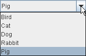

Lección: Usando Componentes Swing
Sección: Cómo Usar Varios Componentes
Cómo Usar Cuadros Combinados
Un JComboBox,
el cual permite al usuario seleccionar una de varias selecciones, puede tener dos formas muy diferentes. La
forma por defecto es el cuadro combinado no editable, la cual caracteriza un botón y una lista desplegable de
valores. La segunda forma, llamado cuadro combinado editable, caracteriza un campo de texto con un pequeño botón que
lo toca. El usuario puede escribir un valor en el campo de texto o pulsar el botón para mostrar una lista
desplegable. Aquí se muestran las dos formas de Cuadros Combinados en la Apariencia Java:
|
|
|
|  |

|
|
Un cuadro combinado no editable, antes (arriba)
y después de que el botón sea pulsado |
Cuadro combinado editable, antes y después
de que el botón con flecha sea pulsado |
Los cuadros combinados requieren poco espacio en pantalla, y su forma editable (campo de texto) es útil para permitir al usuario seleccionar rápidamente un valor sin limitar al usuario a los valores visualizados. Otros componentes que pueden visualizar una-de-muchas selecciones son los grupos de botones de opción y las listas. Los grupos de botones de opción son generalmente los más fáciles de entender para los usuarios, pero los cuadros combinados pueden ser más apropiados cuando el espacio es limitado o hay más que unas pocas selecciones disponibles. Las listas no son terriblemente atractivas, pero son más apropiadas que los cuadros combinados cuando el número de items es grande (digamos, por encima de 20) o cuando podría ser válido seleccionar items múltiples.
Debido a que los cuadros combinados editables y no editables son tan diferentes, esta sección los trata separadamente. Esta sección cubre estos tópicos:
- Usar Un Cuadro Combinado No Editable
- Manejar Eventos en un Cuadro Combinado
- Usar un Cuadro Combinado Editable
- Proporcionar un Renderizador Personalizado
- La IPA de un Cuadro Combinado
- Ejemplos que Usan Cuadro Combinados
Usar Un Cuadro Combinado No Editable
La aplicación mostrada aquí usa un cuadro combinado no editable para elegir una pintura de mascota:
Prueba esto:
-
Pulse el botón Lanzar para ejecutar la Demo ComboBox usando
Java™ Web Start (
descargue KDJ 7 o posterior). Alternativamente, para compilar y ejecutar el ejemplo por usted
mismo, consulte el
the índice de ejemplo.

- Seleccione un nombre de animal del cuadro combinado para ver su pintura.
-
Compare la operación y el IGU de este programa con el que usa botones de opción:
ejecuta RadioButtonDemo (requiere la versión 6). También puede comparar el código fuente:
ComboBoxDemo.javavs.RadioButtonDemo.java.
El código siguiente, tomado de
ComboBoxDemo.java, crea un cuadro combinado no editable y la configura:
String[] petStrings = { "Bird", "Cat", "Dog", "Rabbit", "Pig" };
//Crea el cuadro combinado, selecciona el item en el indice 4.
JComboBox petList = new JComboBox(petStrings);
petList.setSelectedIndex(4);
petList.addActionListener(this);
Este cuadro combinado contiene un vector de cadenas, pero también podría utilizar iconos con la misma facilidad. Para poner cualquier otra cosa en un cuadro combinado o para personalizar la apariencia de los elementos de un cuadro combinado, debe escribir un renderizador personalizado. Un cuadro combinado editable también necesitará un editor personalizado. Refiérase a Proporcionar un Renderizador Personalizado para información y un ejemplo.
El código precedente registra un oyente de acción en el cuadro combinado. Para ver la implementación del oyente de acción y aprender sobre otros tipos de oyentes soportados por el cuadro combinado, refíerase a Manejar Eventos en un Cuadro Combinado.
No importa qué constructor use, un cuadro combinado usa un modelo de cuadro combinado para contener y gestionar los items
en su menú. Cuando inicializa un cuadro combinado con una matriz o un vector, el cuadro combinado crea un modelo de
objeto por defecto para usted. Como con otros componentes Swing, puede personalizar un cuadro combinado en parte
implementando un modelo personalizado─ un objeto que implementa la interfaz
ComboBoxModel.
Nota:
Sea cuidadoso cuando implemente un modelo personalizado para un cuadro combinado. Los métodos de
JComboBox que cambian los items en el menú del cuadro combinado, tal como
insertItemAt, funciona sólo si el modelo de datos implementa el interfaz
MutableComboBoxModel (un subinterfaz de ComboBoxModel). Refíerase a las
tablas de la IPA para ver qué métodos están afectados.
Algo más a tener en cuenta ─ incluso para los cuadros combinados no editables
─ es garantizar que su modelo personalizado dispare
eventos de datos de lista cuando los datos del cuadro combinado
o su estado cambie. Incluso los modelos de cuadros combinados inmutables, cuyos datos nunca cambian, deben
disparar un evento de datos de lista ( un evento CONTENTS_CHANGED) cuando la selección cambia.
Una forma de obtener gratis el código disparador del evento de datos de lista es hacer su modelo de cuadro
combinado una subclase de
AbstractListModel.
Manejar Eventos en un Cuadro Combinado
Aquí está el código de ComboBoxDemo.java que registra e implementa un oyente de acción de la lista
combo:
public class ComboBoxDemo ... implements ActionListener {
. . .
petList.addActionListener(this) {
. . .
public void actionPerformed(ActionEvent e) {
JComboBox cb = (JComboBox)e.getSource();
String petName = (String)cb.getSelectedItem();
updateLabel(petName);
}
. . .
}
Este oyente de acción obtiene el elemento recién seleccionado del cuadro combinado, lo usa para calcular el nombre de un fichero de imagen, y actualiza una etiqueta que muestra la imagen. El cuadro combinado dispara un evento de acción cuando el usuario selecciona un item del menú del cuadro combinado. Vea Cómo Escribir un Oyente de Acción, para información general sobre implementar oyentes de acción.
El cuadro combinado también genera eventos de item, los cuales son disparados cuando cualquiera de los estados de
selección de los item cambian. Sólo un item a la vez puede ser seleccionado en un cuadro combinado, así que cuando
el usuario hace una nueva selección el item seleccionado previamente se convierte en deseleccionado. Así dos
eventos de item son disparados cada vez que el usuario selecciona un item diferente del menú. Si el usuario
selecciona el mismo item, no se dispara ningún evento de item. Use addItemListener para registrar
un oyente de item en un cuadro combinado.
Cómo Escribir un Oyente de Ítem le
da información general sobre la implementación de los oyentes de item.
Aunque JComboBox hereda métodos para registrar oyentes para eventos de bajo nivel ─
eventos de foco, tecla, y ratón, por ejemplo ─ recomendamos que no escuche por eventos de bajo
nivel en un cuadro combinado. Aquí tiene el porqué: Un cuadro combinado es un componente compuesto
─ está formado de dos o más componentes. El cuadro combinado por sí mismo lanza eventos de alto
nivel tales como los eventos de acción. Sus subcomponentes disparan eventos de bajo nivel tales como los eventos
de ratón, tecla y foco. Los eventos de bajo nivel y el subcomponente que los dispara dependen de la Apariencia.
Para evitar escribir código que dependa de la apariencia, usted debería escuchar sólo los eventos de alto nivel
de un componente compuesto tal como un cuadro combinado. Para información sobre eventos, incluyendo una descripción
sobre los eventos de alto y bajo nivel, refíerase a
Escribir Oyentes de Evento.
Usar un Cuadro Combinado Editable
Aquí tiene una foto de una aplicación de demostración que usa un cuadro combinado editable para introducir un patrón con el cual dar formato a fechas.

Pruebe esto:
-
Pulse el botón Lanzar para ejecutar la Demostración ComboBox2 usando
Java™ Web Start (
descargue KDJ 7 o posterior). Alternativamente, para compilar y ejecutar el ejemplo por usted
mismo, consulte el
índice de ejemplos.
- Introduzca un nuevo patrón seleccionando uno desde el menú del cuadro combinado. El programa reformatea la fecha y hora actual.
- Introduzca un nuevo patrón tecleando uno y presione Intro. De nuevo el programa reformatea la fecha y hora actual.
El siguiente código, tomado de
ComboBoxDemo2.java, crea y configura el cuadro combinado:
String[] patternExamples = {
"dd MMMMM yyyy",
"dd.MM.yy",
"MM/dd/yy",
"yyyy.MM.dd G 'at' hh:mm:ss z",
"EEE, MMM d, ''yy",
"h:mm a",
"H:mm:ss:SSS",
"K:mm a,z",
"yyyy.MMMMM.dd GGG hh:mm aaa"
};
. . .
JComboBox patternList = new JComboBox(patternExamples);
patternList.setEditable(true);
patternList.addActionListener(this);
Este código es muy similar al ejemplo previo, pero merece algunas palabras de explicación. La linea en negrita del código explícitamente habilita la edición para permitir al usuario escribir valores. Esto es necesario porque, por defecto, un cuadro combinado no es editable. Este ejemplo particular permite la edición en la lista combo porque su menú no ofrece todos los patrones de formateo posibles para la fecha, sólo atajos a patrones usados frecuentemente.
Un cuadro combinado editable dispara un evento de acción cuando el usuario selecciona un item del menú y cuando el usuario introduce Intro. Note que el menú permanece sin cambiar cuando el usuario introduce un valor dentro del cuadro combinado. Si quiere, usted puede fácilmente escribir un oyente de acción que añade un nuevo item al menú del cuadro combinado cada vez que el usuario teclea un valor único.
Vea Internacionalización para aprender más sobre el formateo de fechas y otros tipos de datos.
Proporcionar un Renderizador Personalizado
Un cuadro combinado usa un renderizador para visualizar cada item en su menú. Si el cuadro combinado no
es editable, también usa el renderizador para visualizar el item seleccionado actualmente. Un cuadro combinado
editable, por otro lado, usa un editor para visualizar el item seleccionado. Un renderizador para un
cuadro combinado debe implementar el interfaz
ListCellRenderer. Un editor de cuadro combinado debe implementar un
ComboBoxEditor. Esta sección muestra cómo ofrecer un formateador personalizado para un
cuadro combinado no editable.
El renderizador por defecto sabe cómo procesar cadenas e iconos. Si usted coloca otros objetos en una lista
combo, el renderizador por defecto llama al método toString que ofrece una cadena para mostrar.
Usted puede personalizar la forma en que un cuadro combinado se procesa a sí mismo y a sus items implementando su
propio ListCellRenderer.
Aquí tiene una foto de una aplicación que usa un cuadro combinado con un renderizador personalizado:
Pulse el botón Lanzar para ejecutar la Demostración CustomComboBox usando Java™ Web Start ( descargue KDJ 7 o posterior). Alternativamente, para compilar y ejecutar el ejemplo por usted mismo, consulte el índice de ejemplos.
El código fuente completo para este ejemplo está en
CustomComboBoxDemo.java. Para obtener los ficheros de imágen que requiere, consulte el
índice de ejemplos.
Las siguientes sentencias del ejemplo crean una instancia de ComboBoxRenderer (una clase
personalizada) y configura la instancia como el renderizador del cuadro combinado:
JComboBox petList = new JComboBox(intArray);
. . .
ComboBoxRenderer renderer = new ComboBoxRenderer();
renderer.setPreferredSize(new Dimension(200, 130));
petList.setRenderer(renderer);
petList.setMaximumRowCount(3);
La última línea establece el contador máximo de filas del cuadro combinado, el cual determina el número de ítems
visibles cuando el menú es visualizado. Si el número de items en el cuadro combinado es más grande que su contador
máximo de filas, el menú tiene una barra de desplazamiento. Los iconos son bastantes grandes para un menú, de
forma que nuestro código limita el numero de filas a 3. Aquí está la implementación de
ComboBoxRenderer, un renderizador que coloca un icono y el texto lado a lado:
class ComboBoxRenderer extends JLabel
implements ListCellRenderer {
. . .
public ComboBoxRenderer() {
setOpaque(true);
setHorizontalAlignment(CENTER);
setVerticalAlignment(CENTER);
}
/*
* Este método encuentra la imagen y el texto correspondiente
* al valor seleccionado y devuelve la eitqueta, configurada
* para mostrar el texto y imagen.
*/
public Component getListCellRendererComponent(
JList list,
Object value,
int index,
boolean isSelected,
boolean cellHasFocus) {
//Obtiene el índice seleccionado. (El parámetro indice no es
//siempre válido, tan sólo use el valor.)
int selectedIndex = ((Integer)value).intValue();
if (isSelected) {
setBackground(list.getSelectionBackground());
setForeground(list.getSelectionForeground());
} else {
setBackground(list.getBackground());
setForeground(list.getForeground());
}
//Establece el icono y el texto. Si el icono era nulo, dilo.
ImageIcon icon = images[selectedIndex];
String pet = petStrings[selectedIndex];
setIcon(icon);
if (icon != null) {
setText(pet);
setFont(list.getFont());
} else {
setUhOhText(pet + " (no image available)",
list.getFont());
}
return this;
}
. . .
}
Como ListCellRenderer, ComboBoxRenderer implementa un método llamado
getListCellRendererComponent, el cual devuelve un componente cuyo método
paintComponent es utilizado par visualizar el cuadro combinado y cada uno de sus items. La forma más
fácil de visualizar una imagen y un icono es usar una etiqueta. Por eso ComboBoxRenderer es una
subclase de etiqueta y se devuelve a sí misma. La implementación de getListCellRendererComponent
configura el renderizador para visualizar el icono seleccionado actualmente y su descripción.
Estos argumentos son pasados a getListCellRendererComponent:
-
JList list─ un objeto lista usado entre bastidores para mostrar los ítems. El ejemplo usa los colores de este objeto para configurar los colores de primer plano y fondo. -
Object value─ el objeto a renderizar. UnIntegeren este ejemplo. -
int index─ el índice del objeto a renderizar. -
boolean isSelected─ indica si el objeto a renderizar está seleccionado. Usado por el ejemplo para determinar cuáles colores usar. -
boolean cellHasFocus─ indica si el objeto a renderizar tiene el foco.
Note que los cuadros combinados y las listas usan el mismo tipo de renderizador
─ ListCellRenderer. Puede ahorrarse algo de tiempo compartiendo los renderizadores
entre los cuadros combinados y las listas, si tiene sentido para su programa.
La IPA de un Cuadro Combinado
Las siguientes tablas listan los constructores y métodos de JComboBox usados comunmente. Otros
métodos que son más probables que invoque sobre un objeto JComboBox son aquellos que heredan
desde sus superclases, tales como setPreferredSize. Vea
La IPA de JComponent para las tablas de los métodos heredados usados
comunmente.
La IPA para usar Cuadros Combinados se clasifica en dos categorías:
- Configuración u Obtención de los Elementos en el Menú del Cuadro Combinado
- Personalizar la Operación del Cuadro Combinado
| Método | Propósito |
|---|---|
|
JComboBox()
JComboBox(ComboBoxModel) JComboBox(Object[]) JComboBox(Vector) |
Crea un cuadro combinado con los items especificados en su menú. Un cuadro combinado creada con el constructor
por defecto no tiene inicialemnte items en el menú. Cada uno de los otros constructores inicializan el
menú a partir de su argumento: un objeto modelo, una matriz de objetos, o un Vector de
objetos.
|
|
void addItem(Object)
void insertItemAt(Object, int) |
Añade o inserta el objeto especificado en el menú del cuadro combinado. El metodo insert coloca el objeto
especificado en el índice especifcado, esto es, lo inserta antes del objeto que actualmente
está en ese índice. Estos métodos requieren que el modelo de datos del cuadro combinado sea una instancia
de MutableComboBoxModel.
|
|
Object getItemAt(int)
Object getSelectedItem() |
Obtiene un ítem del menú del cuadro combinado. |
|
void removeAllItems()
void removeItemAt(int) void removeItem(Object) |
Elimina uno o más ítems del menu del cuadro combinado. Estos métodos requieren que el modelo de datos
del cuadro combinado sea una instancia de MutableComboBoxModel.
|
| int getItemCount() | Obtiene el número de ítems en el menú del cuadro combinado. |
|
void setModel(ComboBoxModel)
ComboBoxModel getModel() |
Establece u obtiene el modelo de datos que ofrece los ítems en el menú del cuadro combinado. |
|
void setAction(Action)
Action getAction() |
Establece u obtiene la Acción asociada con el cuadro combinado. Para más información, vea
Cómo Usar Acciones.
|
| Método o Constructor | Propósito |
|---|---|
| void addActionListener(ActionListener) |
Añade un oyente de acción a el cuadro combinado. El método actionPerformed del oyente es
llamado cuando el usuario selecciona un ítem del menú del cuadro combinado o, en un cuadro combinado
editable, cuando el usuario presiona Intro.
|
| void addItemListener(ItemListener) |
Añade un oyente de ítem al cuadro combinado. El método itemStateChanged del oyente es llamado
cuando el estado de selección de cualquiera de los ítems del cuadro combinado cambia.
|
|
void setEditable(boolean)
boolean isEditable() |
Establece u obtiene que el usuario pueda escribir en el cuadro combinado. |
|
void setRenderer(ListCellRenderer)
ListCellRenderer getRenderer() |
Establece u obtiene el objeto responsable de pintar el ítem seleccionado en el cuadro combinado. El renderizador es usado sólo cuando el cuadro combinado es no editable. Si el cuadro combinado es editable, el editor es usado para pintar el ítem seleccionado en su lugar. |
|
void setEditor(ComboBoxEditor)
ComboBoxEditor getEditor() |
Establece u obtiene el objeto responsable de pintar y editar el item seleccionado en el cuadro combinado. El editor es usado sólo cuando el cuadro combinado es editable. Si el cuadro combinado no es editable, el renderizador es usado para pintar el ítem seleccionado en su lugar. |
Ejemplos que Usan Cuadro Combinados
Esta tabla muestra los ejemplos que usan JComboBox y dónde esos ejemplos están descritos.
| Ejemplo | Dónde está descrito | Notas |
|---|---|---|
ComboBoxDemo
|
Esta sección | Usa un cuadro combinado no editable. |
ComboBoxDemo2
|
Esta sección | Usa un cuadro combinado editable. |
CustomComboBoxDemo
|
Esta sección | Ofrece un renderizador personalizado para un cuadro combinado. |
TableRenderDemo
|
Cómo Usar Tablas (Usando una Lista Combo como un Editor) | Muestra cómo usar un cuadro combinado como una celda editable de tabla. |